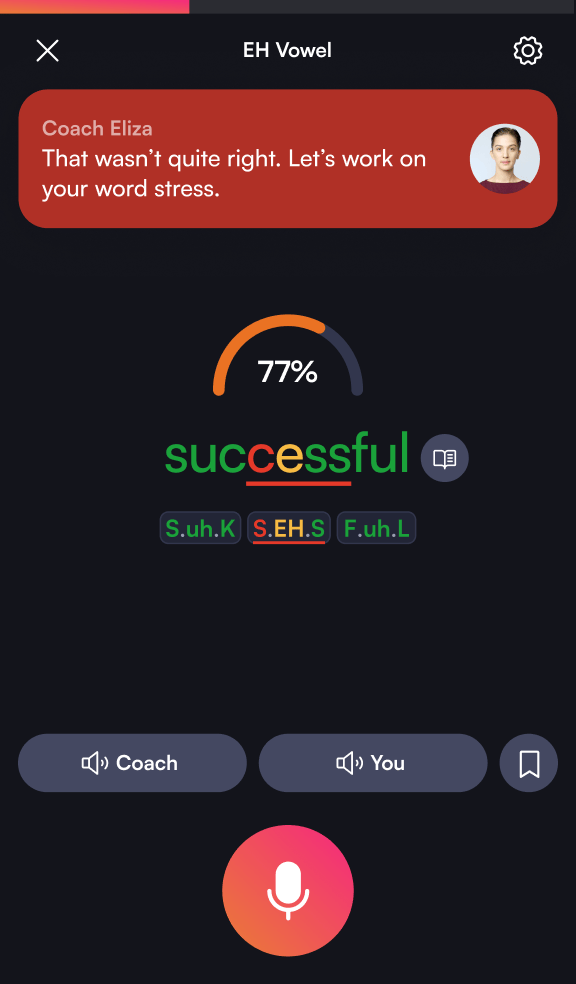

BoldVoice 背后的音素级 AI：为什么它能比语伴反馈准十倍
市面上发音 APP 那么多，为什么 BoldVoice 敢只做一件事——音素级发音诊断。本文从技术原理和产品取舍拆解它的 AI 评分、好莱坞教练方法论、间隔重复记忆的组合拳。
如果我问你：一个发音 APP 能做到多精准的反馈？
大多数人的预期是「对/错」或者「挺好/差一点」——这是 HelloTalk 的语伴、Cambly 的外教、甚至多邻国的游戏化系统给你的上限。但 BoldVoice官网 展示的答案是另一个维度：你还没读完 think 这个词，它已经在屏幕上给 /θ/ 音素打了 62 分，标注出偏差集中在 3000Hz 附近，并用红色色块告诉你舌尖没有顶到位。
这不是魔法，是一套从设计源头就和通用英语 APP 完全不同的架构。我花了一个多礼拜把它的五个模块跑通、反复看 AI 给的波形对比图，终于想明白一件事：BoldVoice 之所以敢把全部赌注押在「发音清晰度」这一个狭窄赛道上，核心支撑就是这套音素级 AI 评分系统。
问题：为什么普通 AI 做不到音素级反馈
先退一步想：为什么市面上几百个英语学习 APP，没有一个能把反馈精准到单个音素的准确率？
答案藏在一个技术取舍里。通用语音识别模型（比如 Whisper、Google Speech-to-Text）的设计目标是「把这段话听懂」——它只关心最终的文本转写对不对，至于你是把 /θ/ 发成了 /s/ 还是 /t/，只要上下文能串起来，模型就认为「通过了」。这种设计在 Siri 或者会议记录里很好用，但用在发音训练上就是灾难：你把 thank 发成 sank，普通识别照样给你判对。
BoldVoice 的 AI 走的是完全相反的路径。它不先做文本转写，而是先把声音切成一个个音素片段，再对每个片段做频谱分析。换句话说，它根本不关心你说的是什么词——它只关心你发出的 /θ/ 这个音，和美式英语母语者发出的标准 /θ/，在舌尖位置、气流形状、频率分布上差了多少。
这个架构上的根本差异，解释了为什么 BoldVoice 能在你说话的时候就实时出结果——颜色标注不是等你读完整个句子再计算的，而是音频流进来的同时就在逐帧比对。

拆解：三层设计如何把发音这件事量化
音素级 AI 只是 BoldVoice 架构的第一层。如果只有这个，它就是个更准一点的发音评测工具——和 Speechace 没什么本质区别。BoldVoice 真正聪明的地方，是把 AI、人类教练、记忆心理学这三个完全不同的东西焊成了一条流水线。
第一层：SpeechScan 诊断——用数据定训练起点
从下载拿到 APP、注册完的第一件事不是选课程，而是读 10 句精心设计的句子。AI 分析这 10 句话里每个音素的发音，输出一份报告：整体等级、已掌握音素、重点改善音素。这份报告决定了你后续所有训练内容。
这里的关键设计是「句子选得够刁钻」。普通音素测试会给你列单词表让你逐个读——但 BoldVoice 知道，单词里能发准的音素，放进句子里可能又会在语速、节奏、协同效应的干扰下打回原形。所以它选的是覆盖所有美式英语音素、且每个音素都在不同语境下出现的句子。诊断出来的不是「你不会 /θ/」，而是「你在弱读位置的 /θ/ 准确率只有 40%，但重读位置能到 75%」——这个精度差决定了后续训练的针对性天差地别。
第二层：好莱坞教练视频——回答「怎么摆嘴」这个 AI 答不了的问题
AI 能告诉你分数，能画出你的波形和标准波形的对比，但它回答不了一个最基础的问题：我到底该把舌头放哪儿？
这就是 BoldVoice 请好莱坞台词教练而不是普通英语老师的原因。台词教练的职业要求是：帮一个母语口音很重的演员，在几周内自然地说出另一套口音，而且要在镜头前不显得刻意。普通英语老师自己发音标准，但不一定知道「怎么让别人改到位」——台词教练恰恰精于此道。每段 5 分钟的视频课不是在教你发音规则，而是在演示：发 /θ/ 时舌尖轻触上齿龈、气流从缝隙里挤出来而不是堵住、声带不震动（这就是 /θ/ 和 /ð/ 的区别）。教练会把物理要点拆成你能感知到的动作，而不是抽象的「送气音」。
视频课还是互动的——教练示范完停下来等你开口，AI 实时反馈。这一层的设计，是让你在动手练之前先建立正确的肌肉记忆模型，避免「AI 反复告诉你不对但你不知道怎么改」的死循环。
第三层：每日计划 + 间隔重复——解决「坚持不下去」和「记不住」两个老问题
很多人知道间隔重复记忆法——在遗忘曲线即将下降时插入复习，效果最好。但知道和做到之间有个巨大鸿沟：你自己不会手动安排复习时间，也不会准确判断「我这个词到底掌握了没有」。
BoldVoice 把这两件事都自动化了。词汇收藏时你只需要点一下按钮，后续的时间表由 APP 自动生成：收藏后第 1 天出现在当前训练、第 3 天进 Challenge Words、第 7 天在 Practice My Text 里遇到、第 14 天可能出现在 AI Chat 对话里。这个间隔不是拍脑袋定的，是基于心理学上的间隔重复理论——在你即将遗忘前提醒一次，强化记忆效果最显著。AI 评分持续全部绿色时还会自动建议你取消收藏，避免无用重复。具体的间隔重复时间表和每个音素的 AI 评分参数，在boldvoice文档里有完整的技术说明。
取舍：这套设计的代价是什么
讲了这么多好处，你可能会问：那它为什么不顺便把语法、词汇、听力也做了？答案是——做不到，因为它的设计从根上就是为「发音单一目标」优化的。
第一，音素级 AI 的算力成本比通用语音识别高得多。通用识别是走一遍模型出一个文本结果，音素级评分是对每个音素做频谱对比、波形匹配、多维度打分。如果它同时要做语法分析、单词记忆、听力理解，算力开销会让实时反馈的延迟超过可接受的范围——你读到一半才出结果，整个实时反馈的优势就没了。
第二，好莱坞教练视频课的制作成本也不低。每段 5 分钟的视频需要台词教练、专业录音棚、后期剪辑，而不是用 AI 合成个虚拟讲师就能凑数。这个成本意味着它不能做太多方向——如果同时开语法课、词汇课，视频质量会急剧下降，反而稀释了它最核心的竞争力。
第三，只做发音的另一个代价是：它帮不了你「不会说」的问题。如果你的词汇量不够、语法没掌握，BoldVoice 能让你发音变准，但你说不出更复杂的句子。它的定位从一开始就是给「词汇语法已经达标，但发音清晰度拖后腿」的用户——这个人群确实不算英语学习者的大多数，但也是痛点最精准、付费意愿最强的一群人。
还有一个容易被忽略的取舍：AI 评分虽然准，但它评的是「和美式英语标准的接近程度」，而不是「你的口音是否自然」。有时候一个稍微偏离标准但流畅自然的发音，比一个每个音素都精确但读得磕磕绊绊的发音，在实际沟通里效果更好。BoldVoice 的 AI 能帮你精准，但「自然」这件事，最终还是要靠 AI Chat 角色扮演的实战场景里自己体会。
判断：这套原理意味着什么
跑完全部模块，我的结论是：BoldVoice 适合两类人。第一类是明确知道自己发音有问题、想要系统性改善的人——不管是职场需要做英文汇报、还是想让外教不再说「你能写出来吗」，它的诊断 → 教练 → AI 反馈 → 每日计划的闭环确实比自己瞎练高效得多。第二类是已经有英语基础、想把口音从「能听懂」提升到「地道」的进阶玩家——音素级反馈的精度，普通 APP 给不了。
但如果你是从零开始学英语、或者主要问题是背不住单词分不清时态，那它对你来说就是个太贵的辅助工具——花在发音上的钱和精力，不如先把词汇语法搞定再来。
归根到底，BoldVoice 值得关注的不只是它的功能，而是它做对了一件很多 APP 不愿意做的事：在一个狭窄的、单一的目标上，把精度推到行业天花板，然后坚决地砍掉所有无关功能。这种产品哲学在如今「全家桶式」英语学习应用泛滥的环境下，反而成了一种稀缺品。想把发音练精的人，应该好好研究一下它的这套设计——它的 AI 架构、教练方法论、间隔重复的组合拳，是目前我见过的发音训练赛道里最完整、最自洽的一套方案。